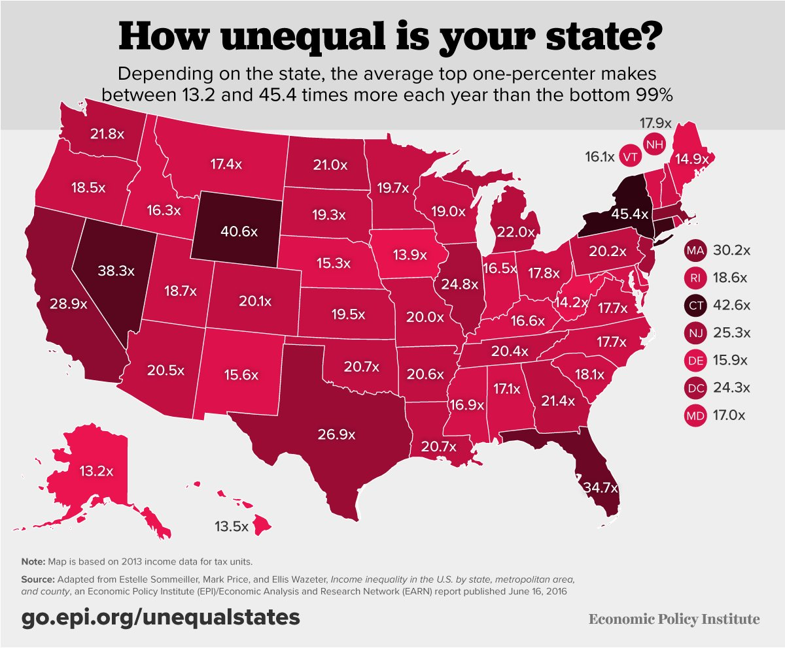
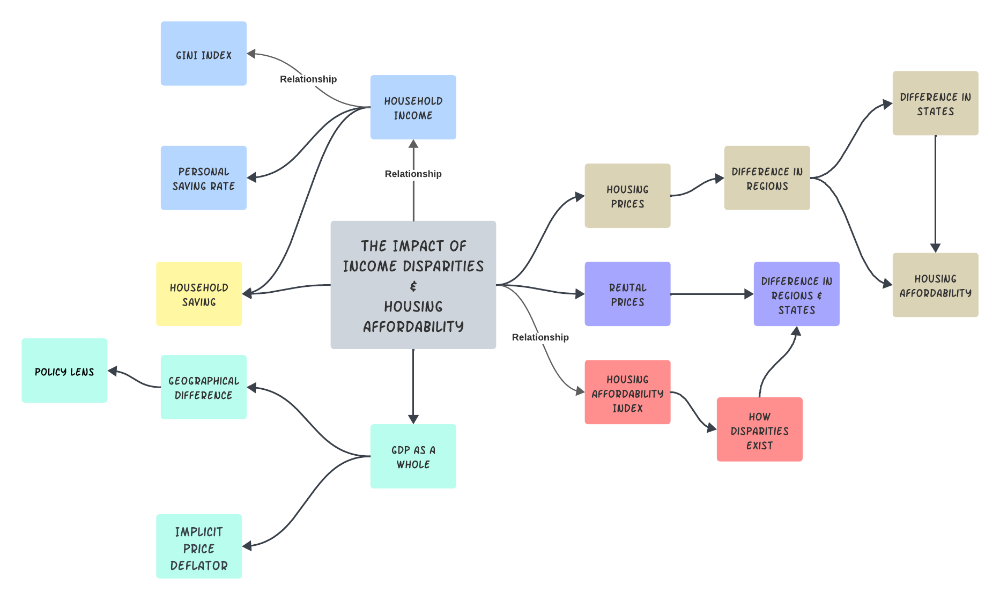

Introduction
The Impact of Income Disparities and Housing Affordability in the United States
Project Backgroung:
With the dramatic development of the technology and society, we have witnessed the continuous increasing in economies. However, such developments did not spread through every corner in USA. The disparities of resources still exist. There are housing price disparities, rental sales disparities, and income disparities for different regions and states. These differents play a very crucial role in our society and they bring huge impact and massive pressure to people nowadays.
The central focus of this project lies in understanding the relationship between the income disparities between and housing affordability in the United States. I aim to help us understand and gain new insights on how varying income levels within society directly affect the ability of individuals and families to secure housing that is both suitable and affordable. Throughout the analysis, different smaller aspects and factors will be analyzed one by one. 
The Big Picture & Literature Review:
Income disparity and housing affordability are not just matters of individual but also broader societal concerns that need to be attended to. The influences of such disparities and results are not only the quality of life for countless Americans citizens but also the overall stability of communities and the economic health of the nation. As I help us explore this issue, we must recognize that it’s not simply about monetary figures; it’s about the pursuit of a fundamental human need: shelter and how income inequality, housing price, rental price, GDP, personal saveing and regional difference influence us as a whole in the United States.
In order to bring a more comprehensive understanding of this topic, we must delve into the body of research and discourse that precedes us. Existing literature reveals the persistent challenge of housing affordability, marked by the growing gap between incomes and housing costs.(Jajtner et al., 2020). Scholars have examined the historical trends, policy interventions, and socioeconomic factors. In this exploration of the impact of income disparities on housing affordability, we will adopt multiple analytical angles to provide a well-rounded perspective.

Mutiple datasets are analyzed thoroughly to provide insights and conclusions. Different methods such as Exploratory Data Analysis, ARMA Models, ARIMAX Models, Spectral Analysis and Filtering,, Financial Time Series Models, and Deep Learning methods are conducted to help me achieve the goal.
Planed Model Using With COVID-19 Factors
Guiding Questions:
To guide the explorations, we have conducted some questions that would be answered using different analysis and dataset:
How have income inequality trends in the United States impacted the individuals?
What are the historical trends in housing prices?
What is the definition of housing affordability, and what metrics are commonly used to assess it?
How do income disparities vary from one region to another?
What regions or states have greater disparities?
What impact have the economy had on the housing market?
Is there any trends or seasonal patterns regarding the income and housing price?
In what ways does housing affordability intersect with broader economic and social issues, such as workforce mobility and education outcomes?
What innovative solutions and strategies can be employed to improve housing affordability for all Americans?
What are the correlations between the sale price, housing price, and rental price?
What future trends should we anticipate in the context of income disparities and housing affordability?
How can addressing income disparities lead to a more equitable and sustainable housing market in the United States?
These guiding questions will serve as different milestones throughout this exploration. The questions might be changed and increased as the project proceeds.